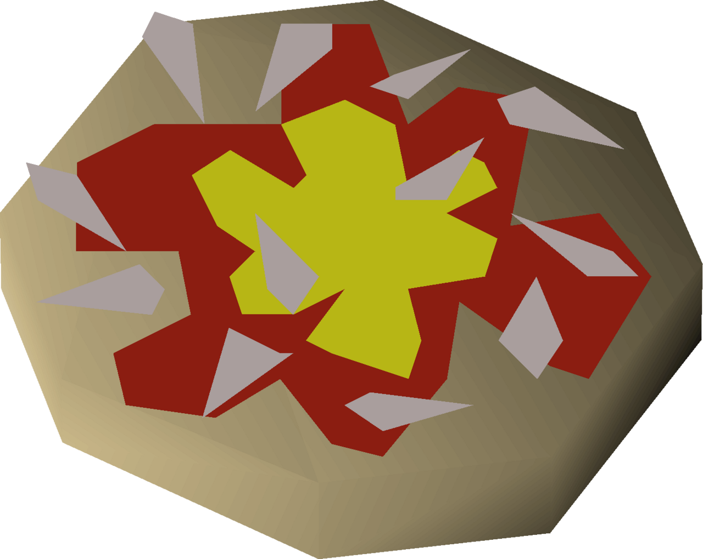

Runescape's Anchovy Pizza

A pizza with anchovies.
Anchovy pizza is an item made with the cooking skill at level 55. It is made by combining cooked anchovies with a cooked plain pizza, granting 39 Cooking experience.
Anchovy pizzas heal 18 hitpoints total, 9 hitpoints per half.
Ingredients
- 1 pot of flour
- 1 bucket of water
- 1 tomato
- 1 cheese
- 1 serving of cooked anchovies
To prepare
- Use a pot of flour with a bucket of water to create a pizza base.
- Add a tomato to the pizza base to create an incomplete pizza.
- Add a cheese to the incomplete pizza to create an uncooked pizza.
- Use the uncooked pizza on a range to create the plain pizza.
- Use cooked anchovies with plain pizza to create an anchovy pizza.
Return to main page